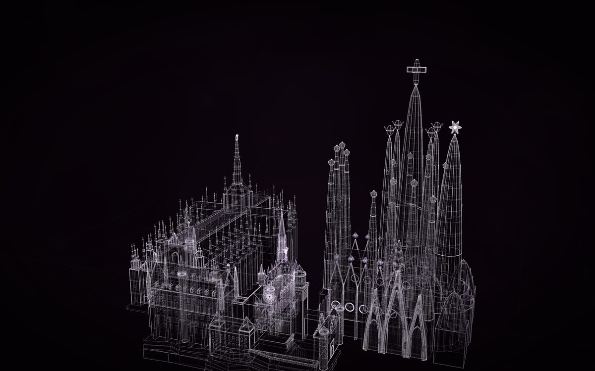

4 constructs, placed 4 times. Drag to turn it; the buttons are its views; P shows how each part is known, S shows it as a solid in its own colours.
Placed from the gallery: Sainte-Chapelle, Duomo di Milano, Sagrada Família, Neuschwanstein.